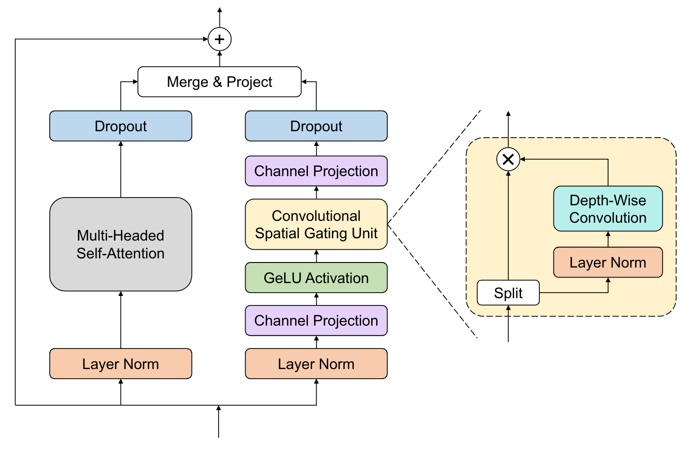

Attention#
Attention is all you need [Vaswani et al., 2017]#
attention is a mechanism that allows a model to focus on relevant parts of the input
(31)#\[\begin{align} \text{Attention}(Q, K, V) = \text{softmax}(\frac{QK^T}{\sqrt{d_k}})V \end{align}\]attention maps can be pulled out of the model after the softmax and visualized to see which parts of the input the model is focusing on
multi-head attention (MHA) splits the input into multiple heads and applies attention to each of them in parallel, then concatenates the outputs and projects them back down to the original dimension, allowing you to focus on information from multiple representation subspaces at once
self-attention is attention where \(Q\), \(K\), and \(V\) are all the same
attention is permutation invariant, so you need to add positional encodings to the input if you want to preserve order
implementation in PyTorch: use
F.scaled_dot_product_attention, which attends over the second last dimension (the other dimensions can be whatever you want)standard flow: embed input, add positional encodings, pass through Transformer blocks, pass through output head
Attention variants#
ReAttention [Zhou et al., 2021]: mix the attention head outputs with a linear layer (after softmax) before multiplying with values, which solves the problem of attention collapse, which is when (deep) ViTs learn attention maps that are similar to each other and so do not scale well with depth
(32)#\[\begin{align} \text{ReAttention}(Q, K, V) = \text{Norm}(\theta^T(\text{softmax}(\frac{QK^T}{\sqrt{d_k}})))V \end{align}\]Parallel attention [Touvron et al., 2022]: instead of stacking Transformer layers sequentially, you can run multiple (two is the recommendation) of them in parallel
(33)#\[\begin{align} \mathbf{x'} &= \text{MHA}_1(\mathbf{x}) + \text{MHA}_2(\mathbf{x})+ \mathbf{x} \\ \mathbf{x''} &= \text{MLP}_1(\mathbf{x'}) + \text{MLP}_2(\mathbf{x'})+ \mathbf{x'} \\ \end{align}\]LayerScale [Touvron et al., 2021]: apply diagonal weight matrices \(W_{MHA}\) and \(W_{MLP}\) to the output of the MHA and MLP layers in a transformer block (or, do a per-channel multiplication of the outputs before adding the residual connection), which improves training dynamics and allows for continued improvement when adding more layers to a ViT
(34)#\[\begin{align} \mathbf{x'} &= \mathbf{W}_{MHA} \, \text{MHA}(\mathbf{x}) + \mathbf{x} \\ \mathbf{x''} &= \mathbf{W}_{MLP} \, \text{MLP}(\mathbf{x'}) + \mathbf{x'} \\ \end{align}\]Branchformer [Peng et al., 2022]: replace the MLP with a convolutional gating MLP (cgMLP), which consists of a depth-wise convolution and linear gating, then merges the MHA and cgMLP outputs by concatenating them and linearly projecting down to the output dimension 
Macaron net [Lu et al., 2019]: instead of MHA and then MLP, do half an MLP, then MHA, then the other half of the MLP, which improves performance
(35)#\[\begin{align} \mathbf{x'} &= \frac{1}{2}\text{MLP}_1(\mathbf{x}) + \mathbf{x} \\ \mathbf{x''} &= \text{MHA}(\mathbf{x'}) + \mathbf{x'} \\ \mathbf{x'''} &= \frac{1}{2}\text{MLP}_2(\mathbf{x''}) + \mathbf{x''} \\ \end{align}\]E-Branchformer [Kim et al., 2022]: merge global (MHA) and local (cgMLP) branches by concatenating them and then applying a depth-wise convolution with a residual connection before projecting back down
(36)#\[\begin{align} \mathbf{x'} &= \text{Concat}(\text{MHA}(\mathbf{x}), \text{cgMLP}(\mathbf{x})) \\ \mathbf{x''} &= \text{DwConv}(\mathbf{x'}) + \mathbf{x'} \\ \mathbf{x'''} &= \mathbf{W} \, \mathbf{x''} \end{align}\]
Vision Transformers#
Vision Transformers [Dosovitskiy et al., 2021]#
ViTs are Transformers applied to images by splitting the image into patches, flattening them into a sequence of patches, embedding each patch into some higher dimensional space, then applying a standard transformer to the sequence
ViTs have much less inductive bias than CNNs, and spatial relations are learned through the positional embeddings, so ViTs tend to need more data to train
MLP layers are local and translationally equivariant, and the self-attention layers are global
Axial attention [Ho et al., 2019]#
axial attention works efficiently on high dimensional arrays (e.g., 3 spatial dimensions) by splitting the sequence into multiple axes and applying attention to each axis in parallel rather than patching the array (which quickly becomes unfeasible with \(N^2\) scaling in high dimensions)
implement by reshaping the input to put the axis you want to attend over in the second last position, then applying standard attention, then reshaping the input back, and repeating for each axis you want to attend over, and summing all the inputs
Pre-training#
Emergent properties in self-supervised vision transformers [Caron et al., 2021]#
introduces DINO (self-distillation with no labels), which produces representations containing valuable segmentation information that can be used directly with a k-NN classifier (no fine-tuning or linear classifier) to produce high accuracy predictions on ImageNet
self-supervised learning process:
create a student and a teacher network with the same architecture but different initializations
given an image, produce global views (random crops) and local views (random patches) of the image
give the global views to the teacher and all views to the student, and make them predict softmaxes over \(K\) dimensions
compute the cross-entropy loss between the student and teacher softmaxes and backpropagate through the student only
update the teacher by an exponential moving average (EMA) of the student weights \(\theta_t \leftarrow \alpha \theta_t + (1 - \alpha) \theta_s\)
applying an (updating) centering and sharpening (with a temperature parameter on the softmax) to the teacher softmaxes prevents collapse (putting all probability in a single dimension or going to the uniform distribution)
- CTM+21
Mathilde Caron, Hugo Touvron, Ishan Misra, Herve Jegou, Julien Mairal, Piotr Bojanowski, and Armand Joulin. Emerging Properties in Self-Supervised Vision Transformers. In 2021 IEEE/CVF International Conference on Computer Vision (ICCV), 9630–9640. Montreal, QC, Canada, October 2021. IEEE. URL: https://ieeexplore.ieee.org/document/9709990/ (visited on 2023-12-27), doi:10.1109/ICCV48922.2021.00951.
- DBK+21
Alexey Dosovitskiy, Lucas Beyer, Alexander Kolesnikov, Dirk Weissenborn, Xiaohua Zhai, Thomas Unterthiner, Mostafa Dehghani, Matthias Minderer, Georg Heigold, Sylvain Gelly, Jakob Uszkoreit, and Neil Houlsby. An Image is Worth 16x16 Words: Transformers for Image Recognition at Scale. June 2021. URL: http://arxiv.org/abs/2010.11929 (visited on 2023-10-12), arXiv:2010.11929.
- HKWS19
Jonathan Ho, Nal Kalchbrenner, Dirk Weissenborn, and Tim Salimans. Axial Attention in Multidimensional Transformers. December 2019. URL: http://arxiv.org/abs/1912.12180 (visited on 2023-10-12), arXiv:1912.12180.
- KWP+22
Kwangyoun Kim, Felix Wu, Yifan Peng, Jing Pan, Prashant Sridhar, Kyu J. Han, and Shinji Watanabe. E-Branchformer: Branchformer with Enhanced merging for speech recognition. October 2022. URL: http://arxiv.org/abs/2210.00077 (visited on 2023-12-27), arXiv:2210.00077.
- LLH+19
Yiping Lu, Zhuohan Li, Di He, Zhiqing Sun, Bin Dong, Tao Qin, Liwei Wang, and Tie-Yan Liu. Understanding and Improving Transformer From a Multi-Particle Dynamic System Point of View. June 2019. URL: http://arxiv.org/abs/1906.02762 (visited on 2023-12-27), arXiv:1906.02762.
- PDLW22
Yifan Peng, Siddharth Dalmia, Ian Lane, and Shinji Watanabe. Branchformer: Parallel MLP-Attention Architectures to Capture Local and Global Context for Speech Recognition and Understanding. July 2022. URL: http://arxiv.org/abs/2207.02971 (visited on 2023-12-20), arXiv:2207.02971.
- TCS+21
Hugo Touvron, Matthieu Cord, Alexandre Sablayrolles, Gabriel Synnaeve, and Hervé Jégou. Going deeper with Image Transformers. April 2021. URL: http://arxiv.org/abs/2103.17239 (visited on 2023-12-27), arXiv:2103.17239.
- TCElNouby+22
Hugo Touvron, Matthieu Cord, Alaaeldin El-Nouby, Jakob Verbeek, and Hervé Jégou. Three Things Everyone Should Know About Vision Transformers. In Shai Avidan, Gabriel Brostow, Moustapha Cissé, Giovanni Maria Farinella, and Tal Hassner, editors, Computer Vision – ECCV 2022, volume 13684, pages 497–515. Springer Nature Switzerland, Cham, 2022. URL: https://link.springer.com/10.1007/978-3-031-20053-3_29 (visited on 2023-11-10), doi:10.1007/978-3-031-20053-3_29.
- VSP+17
Ashish Vaswani, Noam Shazeer, Niki Parmar, Jakob Uszkoreit, Llion Jones, Aidan N. Gomez, Lukasz Kaiser, and Illia Polosukhin. Attention Is All You Need. 2017. URL: http://arxiv.org/abs/1706.03762 (visited on 2023-10-14), arXiv:1706.03762.
- ZKJ+21
Daquan Zhou, Bingyi Kang, Xiaojie Jin, Linjie Yang, Xiaochen Lian, Zihang Jiang, Qibin Hou, and Jiashi Feng. DeepViT: Towards Deeper Vision Transformer. April 2021. URL: http://arxiv.org/abs/2103.11886 (visited on 2023-12-21), arXiv:2103.11886.